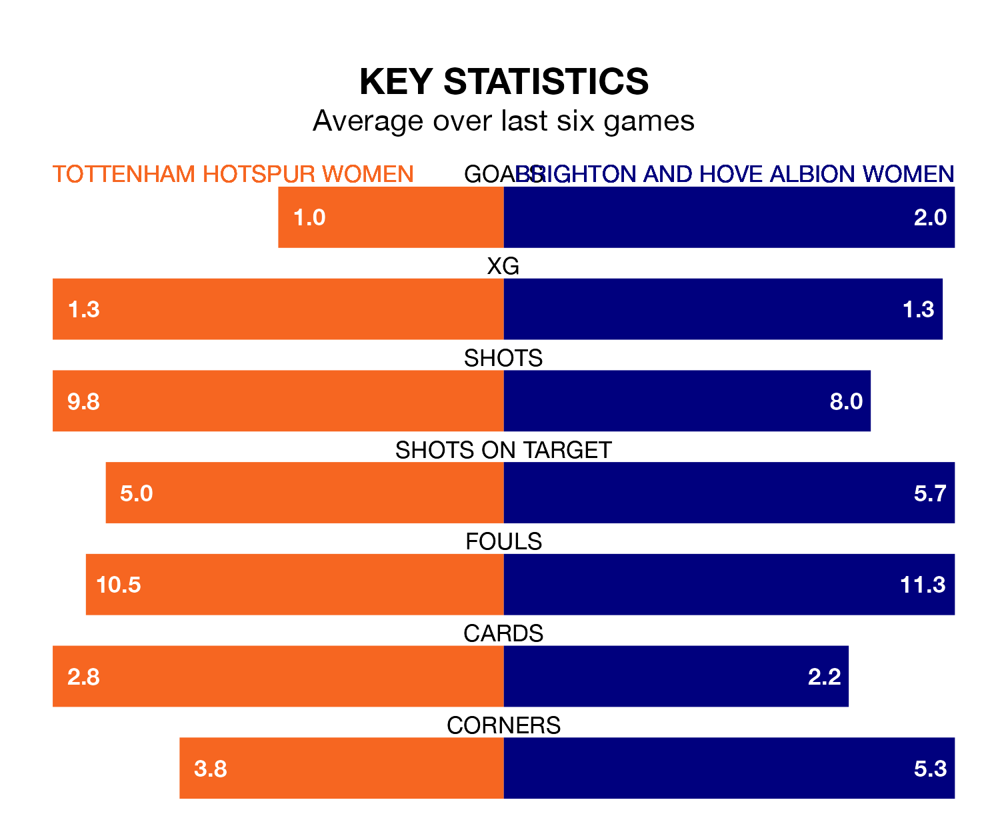

Tottenham Hotspur Women host Brighton and Hove Albion Women on Sunday at Brisbane Road in the FA Women's Super League.
In their last league match, on April 21, Tottenham Hotspur drew with Manchester United Women 2-2 away, with goals from Bethany England and Jessica Ngunga.
Brighton & Hove Albion lost, 2-1 at home against Everton Women on April 19, with Tatiana Vanessa Ferreira Pinto scoring their goals.
In the last 10 years, Tottenham Hotspur and Brighton & Hove Albion have played each other on 14 occasions. Tottenham Hotspur won seven of them, Brighton & Hove Albion five, and they drew twice.
On average, Spurs scored 1.9 goals and the Seagulls 1.2 in those matches.
Their last meeting was on October 15, when Tottenham Hotspur won 3-1 away.
In Elisabeth Terland, Brighton & Hove Albion have one of the league's sharpest shooters so far this season. She has notched 12 goals in 19 appearances, to sit third in the scoring charts.
Her goal rate of one every 128 minutes is quicker than that of Martha Thomas, Tottenham Hotspur's top scorer with a goal every 182 minutes, and a total of seven goals in 16 games.
With 25 goals in 19 games so far this season, the Seagulls are scoring at below the league average rate with 1.3 goals per game. And they are conceding more than average, letting in 41 goals at a rate of 2.2 per game.
Spurs are also below average scorers, with 1.4 goals per game, compared to a league average of 1.7. They have conceded 1.7 goals per game.
The hosts are in mixed form in the FA Women's Super League, with two wins and two draws from their last six games.
With two wins and a draw over that period, the away team's form is slightly worse – they have taken seven points from 18, compared to Tottenham Hotspur's eight.
Brighton & Hove Albion are eighth in the table after 19 games, of which they have won five and drawn three, earning 18 points.
Tottenham Hotspur are two places ahead of Brighton & Hove Albion in sixth, with seven wins and five draws putting them on 26 points.
Updated: 07:59 (UTC), 26/04/24